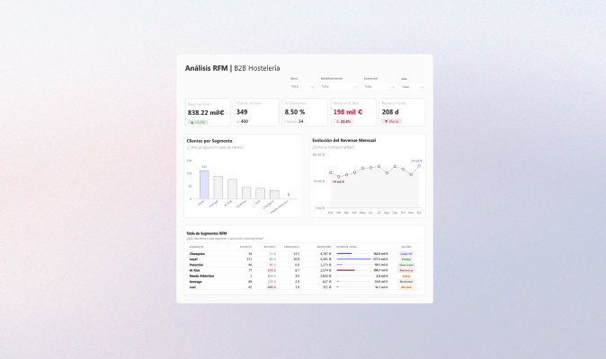

Portfolio
Power BI
Dashboards interactivos, modelado de datos en estrella, DAX avanzado y diseño visual orientado a la decisión. Cada proyecto nace de una pregunta real de negocio y se resuelve con datos, contexto y jerarquía visual.
Dashboards interactivos, modelado de datos en estrella, DAX avanzado y diseño visual orientado a la decisión. Cada proyecto nace de una pregunta real de negocio y se resuelve con datos, contexto y jerarquía visual.
Aquí recopilo los proyectos que he desarrollado con Power BI. Cada dashboard resuelve algo distinto — ventas, financiero, marketing, retail — pero todos están pensados para que la respuesta se lea sin tener que preguntar.

En muchos equipos comerciales el análisis de ventas empieza y termina en el total. Si la cifra sube, todo bien. El problema es que dos períodos pueden cerrar con el mismo número y haber sido radicalmente distintos por dentro. Construí un informe que aplica el estándar IBCS para integrar volumen, variación absoluta y porcentaje en un único visual, con tres tipos de gráfico distintos según el ángulo de lectura.

Una cadena de tiendas con datos completos en el TPV pero sin capacidad de responder preguntas básicas de negocio: qué tienda rinde mejor, dónde se pierde margen, si los objetivos se cumplen o solo se supera el mes anterior. Diseñé un sistema de reporting integral — desde el modelo de datos hasta el dashboard — que responde esas preguntas de un vistazo: qué tienda rinde mejor, dónde se pierde margen y si los objetivos se están cumpliendo de verdad.

Cuando los resultados de marketing caen de un año a otro, la conclusión rápida es que algo ha empeorado. Pero un –12% en impresiones se lee de forma completamente distinta si el gasto también cayó un –26%. Diseñé un dashboard de comparación interanual que no mide solo si hay más o menos volumen, sino si el negocio está siendo más o menos eficiente con lo que invierte.

En la mayoría de empresas, la información financiera existe: hay balances, cuenta de resultados, presupuestos, asientos contables. El problema no es que falten datos, sino que están dispersos y nadie en dirección puede ver el negocio completo en una sola lectura. Diseñé un sistema de análisis financiero integral que conecta balance, PyG y cash flow — y permite pasar de un KPI de dirección hasta el asiento contable que lo explica.

La Cuenta de Pérdidas y Ganancias es el informe más importante de una empresa y, curiosamente, uno de los que peor funciona en herramientas de BI. El problema no es técnico: es que una PyG tiene subtotales con reglas propias, signos contables que no coinciden con la lógica analítica y totales que dejan de cuadrar en cuanto cambias el contexto. Construí un P&L en Power BI que cuadra en cualquier nivel de filtro, sin perder la lógica contable por el camino.

La mayoría de análisis de mercado turístico empiezan por el precio. Este empieza por el territorio. Con 6.030 propiedades distribuidas entre costa, ciudad e interior, el mapa era la única forma honesta de leer el mercado del País Vasco. Planteé un análisis territorial segmentado por zona, tipo de alojamiento y perfil de anfitrión para entender qué hay realmente detrás del precio y cuándo ese precio tiene sentido.

Una distribuidora de hostelería, 400 clientes y una caída de revenue que nadie sabía explicar. El análisis RFM identificó 198.000€ en riesgo dentro del segmento que generaba la mitad del negocio. Construí un sistema de segmentación RFM que clasifica a cada cliente según cuándo compró, con qué frecuencia y cuánto y asigna una acción comercial concreta a cada grupo.
Experimentos con DAX y modelado avanzado en Power BI: patrones que reutilizo en proyectos reales para no escribir la misma medida dos veces.
Medidas DAX diseñadas para reutilizar cálculos de periodos comparativos sin duplicar lógica.
Ver medidas →Implementación de rankings dinámicos que permiten analizar el rendimiento de categorías o segmentos en distintos contextos.
Explorar →Configuración de seguridad a nivel de fila para limitar el acceso a los datos según el perfil del usuario.
Ver implementación →
No estás filtrando datos. Estás eligiendo qué historia quieres ver.
Input Slicer, Field Parameters y DAX para análisis dinámicos en una sola tabla.
Ver post
El futuro de los dashboards no son más gráficos, son mejores interacciones.
Input Slicer, Top N y títulos dinámicos para que el usuario explore sin perderse.
Ver post
Producto a producto: cómo los datos cuentan historias.
Análisis anual con zoom trimestral que explica quién gana y cuándo.
Ver post
Si tienes que reconstruir la historia en tu cabeza, el dashboard falla.
Slope charts y small multiples para concentrar toda la información por producto.
Ver post
Un gráfico puede ser correcto y aun así engañar.
Cómo los outliers distorsionan la escala y cómo construir un zoom visual.
Ver post
Variaciones entre columnas al alcance de un vistazo.
Enfoque nativo para hacer comparables las variaciones porcentuales entre periodos.
Ver post